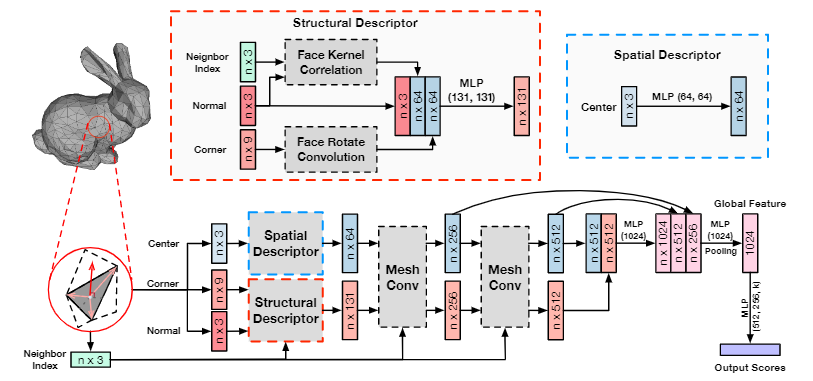
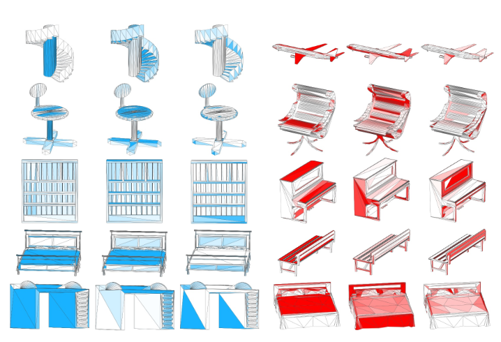

冯玉彤, 丰一帆, 有昊轩
网格（Mesh）是三维物体的一类重要的数据类型，在计算机视觉和计算机图形学领域得到了广泛的关注和研究。在三维物体表示任务上，近年来已经出现了大量基于体素、网格和多视图的研究工作，但由于网格数据的复杂性和不规则性，基于网格数据的研究相对稀缺。在本文中，我们提出了名为 MeshNet 的网格神经网络，用于直接在三维网格数据进行表示学习。我们提出了逐三角面片处理和特征划分的学习方法，并提出了相应的处理模块来解决网格数据的复杂性和不规则性问题。我们在三维模型的分类和检索任务上进行了充分实验，实验结果及与最优方法的对比表明，我们的网络能够有效实现三维模型的分类与检索，证明了所提表示方法的有效性。

Fig 1. MeshNet的体系结构，输入的是一系列具有初始值的面，这些面被输入到空间和结构描述符中， 以生成初始的空间和结构特征。然后，将特征与标记为“mesh Conv”的网格卷积块中的邻域信息（neighboring in-formation）进行融合，通过pool层以输出全局特征。

Fig 2. 结构特征的特征可视化。同一列的模型用特征中同一通道的值着色。